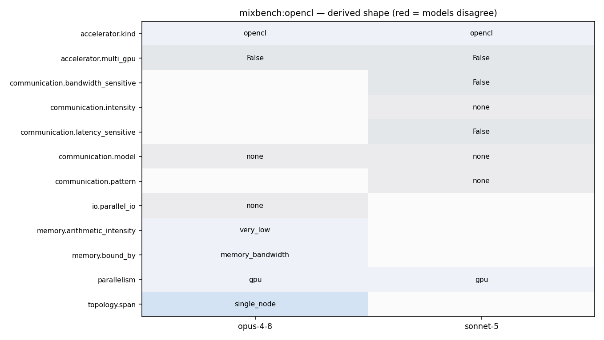

./mixbench-ocl [device_index]
./mixbench-opencl [device_index]
47 sz_name_len = sz_name_len>sizeof(plat_name) ? sizeof(plat_name) : sz_name_len; 48 OCL_SAFE_CALL( clGetPlatformInfo(platform_ids[i], CL_PLATFORM_NAME, sz_name_len, plat_name, NULL) ); 49 50 OCL_SAFE_CALL( clGetDeviceIDs(platform_ids[i], CL_DEVICE_TYPE_ALL, 0, NULL, &cnt_device_ids) ); 51 OCL_SAFE_CALL( clGetDeviceIDs(platform_ids[i], CL_DEVICE_TYPE_ALL, cnt_device_ids, device_ids, NULL) ); 52 for(int d=0; d<(int)cnt_device_ids; d++){ 53 if( fout ){
28 29 #define FRACTION_CEILING(numerator, denominator) ((numerator+denominator-1)/(denominator)) 30 31 inline cl_device_id GetDeviceID(int index, FILE *fout){ 32 cl_uint cnt_platforms, cnt_device_ids; 33 cl_device_id device_selected = NULL; 34 char dev_name[256], plat_name[256]; 35 36 OCL_SAFE_CALL( clGetPlatformIDs(0, NULL, &cnt_platforms) ); 37 cl_platform_id *platform_ids = (cl_platform_id*)alloca(sizeof(cl_platform_id)*cnt_platforms); 38 cl_device_id device_ids[256]; 39 OCL_SAFE_CALL( clGetPlatformIDs(cnt_platforms, platform_ids, NULL) ); 40 41 if( fout ) 42 fprintf(fout, "Available OpenCL devices:\n"); 43 int cur_dev_idx = 1; 44 for(int i=0; i<(int)cnt_platforms; i++){ 45 size_t sz_name_len; 46 OCL_SAFE_CALL( clGetPlatformInfo(platform_ids[i], CL_PLATFORM_NAME, 0, NULL, &sz_name_len) ); 47 sz_name_len = sz_name_len>sizeof(plat_name) ? sizeof(plat_name) : sz_name_len; 48 OCL_SAFE_CALL( clGetPlatformInfo(platform_ids[i], CL_PLATFORM_NAME, sz_name_len, plat_name, NULL) ); 49 50 OCL_SAFE_CALL( clGetDeviceIDs(platform_ids[i], CL_DEVICE_TYPE_ALL, 0, NULL, &cnt_device_ids) ); 51 OCL_SAFE_CALL( clGetDeviceIDs(platform_ids[i], CL_DEVICE_TYPE_ALL, cnt_device_ids, device_ids, NULL) );
28 29 #define FRACTION_CEILING(numerator, denominator) ((numerator+denominator-1)/(denominator)) 30 31 inline cl_device_id GetDeviceID(int index, FILE *fout){ 32 cl_uint cnt_platforms, cnt_device_ids; 33 cl_device_id device_selected = NULL; 34 char dev_name[256], plat_name[256];
61 Elements per thread: 8 62 Thread fusion degree: 4 63 ----------------------------------------------------------------------------- CSV data ----------------------------------------------------------------------------- 64 Experiment ID, Single Precision ops,,,, Double precision ops,,,, Half precision ops,,,, Integer operations,,, 65 Compute iters, Flops/byte, ex.time, GFLOPS, GB/sec, Flops/byte, ex.time, GFLOPS, GB/sec, Flops/byte, ex.time, GFLOPS, GB/sec, Iops/byte, ex.time, GIOPS, GB/sec 66 0, 0.250, 0.32, 104.42, 417.68, 0.125, 0.63, 53.04, 424.35, 0.500, 0.32, 211.41, 422.81, 0.250, 0.32, 105.58, 422.30 67 1, 0.750, 0.32, 316.34, 421.79, 0.375, 0.63, 158.69, 423.18, 1.500, 0.32, 634.22, 422.81, 0.750, 0.32, 317.30, 423.07 68 2, 1.250, 0.32, 528.46, 422.77, 0.625, 0.78, 215.91, 345.45, 2.500, 0.32, 1055.97, 422.39, 1.250, 0.32, 528.57, 422.86 69 3, 1.750, 0.32, 738.81, 422.17, 0.875, 1.08, 218.17, 249.34, 3.500, 0.32, 1478.95, 422.56, 1.750, 0.32, 740.59, 423.20
1 # mixbench 2 The purpose of this benchmark tool is to evaluate performance bounds of GPUs (or CPUs) on mixed operational intensity kernels. The executed kernel is customized on a range of different operational intensity values. Modern GPUs are able to hide memory latency by switching execution to threads able to perform compute operations. Using this tool one can assess the practical optimum balance in both types of operations for a compute device. CUDA, HIP, OpenCL and SYCL implementations have been developed, targeting GPUs, or OpenMP when using a CPU as a target. 3 4 ## Implementations 5
28 29 #define FRACTION_CEILING(numerator, denominator) ((numerator+denominator-1)/(denominator)) 30 31 inline cl_device_id GetDeviceID(int index, FILE *fout){ 32 cl_uint cnt_platforms, cnt_device_ids; 33 cl_device_id device_selected = NULL; 34 char dev_name[256], plat_name[256]; 35 36 OCL_SAFE_CALL( clGetPlatformIDs(0, NULL, &cnt_platforms) ); 37 cl_platform_id *platform_ids = (cl_platform_id*)alloca(sizeof(cl_platform_id)*cnt_platforms); 38 cl_device_id device_ids[256]; 39 OCL_SAFE_CALL( clGetPlatformIDs(cnt_platforms, platform_ids, NULL) ); 40 41 if( fout ) 42 fprintf(fout, "Available OpenCL devices:\n"); 43 int cur_dev_idx = 1; 44 for(int i=0; i<(int)cnt_platforms; i++){ 45 size_t sz_name_len; 46 OCL_SAFE_CALL( clGetPlatformInfo(platform_ids[i], CL_PLATFORM_NAME, 0, NULL, &sz_name_len) ); 47 sz_name_len = sz_name_len>sizeof(plat_name) ? sizeof(plat_name) : sz_name_len; 48 OCL_SAFE_CALL( clGetPlatformInfo(platform_ids[i], CL_PLATFORM_NAME, sz_name_len, plat_name, NULL) ); 49 50 OCL_SAFE_CALL( clGetDeviceIDs(platform_ids[i], CL_DEVICE_TYPE_ALL, 0, NULL, &cnt_device_ids) ); 51 OCL_SAFE_CALL( clGetDeviceIDs(platform_ids[i], CL_DEVICE_TYPE_ALL, cnt_device_ids, device_ids, NULL) );
28 29 #define FRACTION_CEILING(numerator, denominator) ((numerator+denominator-1)/(denominator)) 30 31 inline cl_device_id GetDeviceID(int index, FILE *fout){ 32 cl_uint cnt_platforms, cnt_device_ids; 33 cl_device_id device_selected = NULL; 34 char dev_name[256], plat_name[256]; 35 36 OCL_SAFE_CALL( clGetPlatformIDs(0, NULL, &cnt_platforms) ); 37 cl_platform_id *platform_ids = (cl_platform_id*)alloca(sizeof(cl_platform_id)*cnt_platforms); 38 cl_device_id device_ids[256]; 39 OCL_SAFE_CALL( clGetPlatformIDs(cnt_platforms, platform_ids, NULL) ); 40 41 if( fout ) 42 fprintf(fout, "Available OpenCL devices:\n"); 43 int cur_dev_idx = 1; 44 for(int i=0; i<(int)cnt_platforms; i++){ 45 size_t sz_name_len; 46 OCL_SAFE_CALL( clGetPlatformInfo(platform_ids[i], CL_PLATFORM_NAME, 0, NULL, &sz_name_len) ); 47 sz_name_len = sz_name_len>sizeof(plat_name) ? sizeof(plat_name) : sz_name_len; 48 OCL_SAFE_CALL( clGetPlatformInfo(platform_ids[i], CL_PLATFORM_NAME, sz_name_len, plat_name, NULL) ); 49 50 OCL_SAFE_CALL( clGetDeviceIDs(platform_ids[i], CL_DEVICE_TYPE_ALL, 0, NULL, &cnt_device_ids) ); 51 OCL_SAFE_CALL( clGetDeviceIDs(platform_ids[i], CL_DEVICE_TYPE_ALL, cnt_device_ids, device_ids, NULL) );
28 29 #define FRACTION_CEILING(numerator, denominator) ((numerator+denominator-1)/(denominator)) 30 31 inline cl_device_id GetDeviceID(int index, FILE *fout){ 32 cl_uint cnt_platforms, cnt_device_ids; 33 cl_device_id device_selected = NULL; 34 char dev_name[256], plat_name[256];